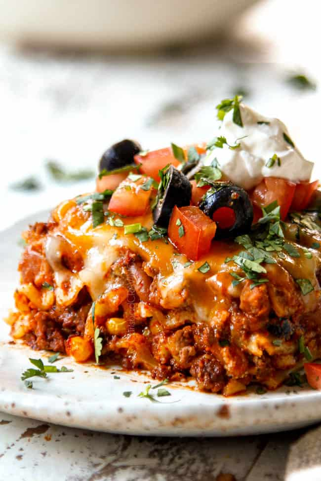

Mexican Lasagna

Description:
This is a traditional dish in my family. Anyone can make it really. It is composed of traditional Mexican ingredients layered over the top of one another in a lasagna-like fashion (hence the name) but has little similarity to lasagna, so lasagna haters have no fear!
Ingredients:
- 1.5lb ground beef
- 1 oz taco seasoning
- 12 flour tortillas
- 1 (14oz) can refried beans
- 3c shredded colby-jack cheese
- 8oz jar taco sauce
- 1c shredded colby-jack cheese
Steps:
- Cook ground beef pink -> brown
- Drain excess grease, add taco seasoning and water to beef
- Arrange 3 tortillas on the bottom of the dish and add a layer of beef, beans, and cheese. Repeat process for remaining tortillas and beef/beans/cheese
- Top with remaining tortillas and taco sauce. Place in oven and bake for 20-25 mins at 350F
- Top with 1c cheeese and set to broil for 3-5 mins
- Divide and conquer!
More Recipes